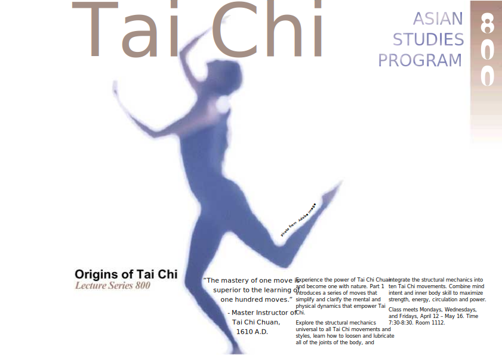
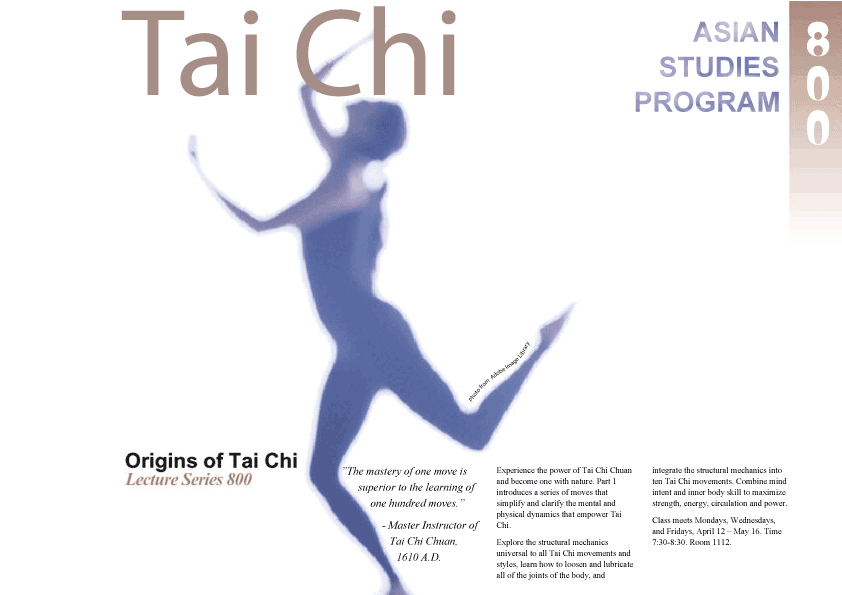
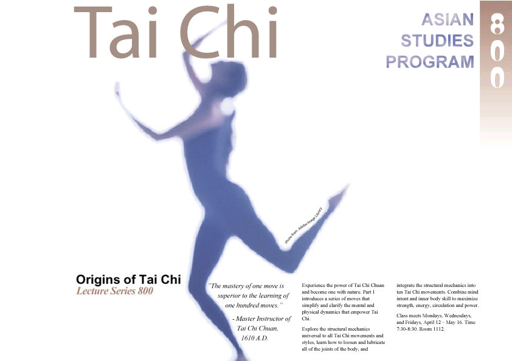
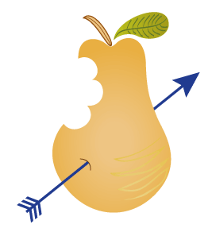

1.СТВОРЕННЯ ОСНОВНИХ ФОРМ

Вихідне зображення Logo.svg
Розмір: 9КБ
Оптимізоване зображення Logo.gif
Розмір: 4КБ
Оптимізоване зображення Logo.png
Розмір: 3КБ
Оптимізоване зображення Logo.jpg
Розмір: 11КБ
2.РОБОТА З ТЕКСТОМ
Вихідне зображення TaiChi.svg
Розмір: 25КБ

Оптимізоване зображення TaiChi.gif
Розмір: 44КБ

Оптимізоване зображення TaiChi.png
Розмір: 57КБ

Оптимізоване зображення TaiChi.jpg
Розмір: 49КБ
3.МАЛЮВАННЯ ПЕРОМ

Вихідне зображення Pear.svg
Розмір: 16КБ

Оптимізоване зображення Pear.gif
Розмір: 9КБ
Оптимізоване зображення Pear.png
Розмір: 7КБ
Оптимізоване зображення Pear.jpg
Розмір: 9КБ